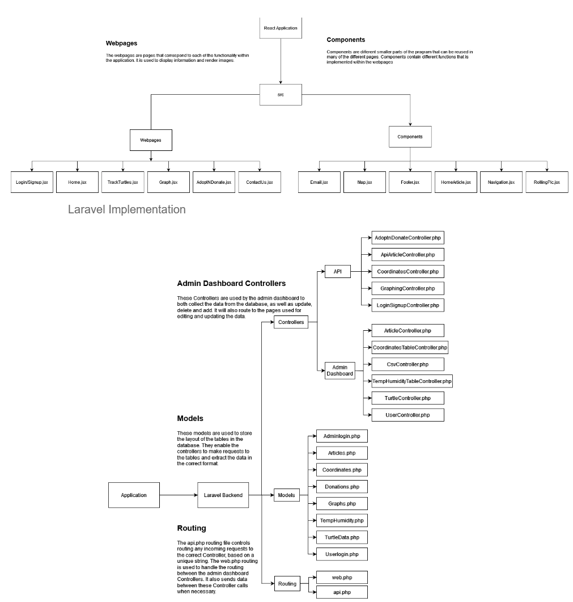
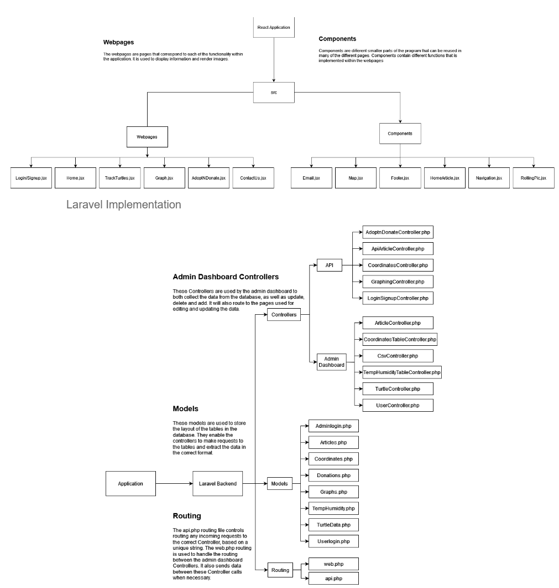

Featured Projects
From Normals to Mesh
Undergraduate Final Year Dissertation · Computer Vision & 3D Geometry
Research-grade 3D reconstruction pipeline for generating accurate, watertight vascular surface meshes from contrast-enhanced CT data. The project evaluates how surface normal estimation and orientation strategies influence reconstruction quality using Screened Poisson Surface Reconstruction.
Balance Buddy
Budget Management Android Application
Lightweight Android budgeting application designed for expense tracking, subscription management, and financial insights, with a focus on performance and accessibility in low-resource environments.
 

Crowdfunding & Conservation Web Platform (SEATRU)
Full-Stack Web Application · Team Project (4 members)
Full-stack web platform developed for the Sea Turtle Research Unit (SEATRU), Malaysia, designed to support marine conservation through crowdfunding, public engagement, and transparent tracking of conservation efforts.


Intelligent Budgeted Web Crawler
Active Embedding-Based Adaptation · AI Systems Project
AI-powered web crawler designed to autonomously discover and prioritize topic-relevant web pages under a fixed crawl budget. The system models web crawling as a sequential decision-making problem using semantic relevance and adaptive prioritization.